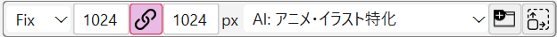
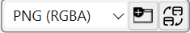

リサイズ・形式変換
画像サイズの変更（AIによる高品質な拡大を含む）と、画像形式・色モードの変換、ファイルサイズの圧縮を行います。
リサイズ

1234567
| 1指定方法 | Fix（固定サイズ）／%（パーセント）／Lng（長辺固定）。 |
| 2幅 | 変更後の幅。 |
| 3縦横比の固定 | ONで縦横比を維持します。 |
| 4高さ | 変更後の高さ。 |
| 5拡大方法 | 通常拡大・縮小、または各種AI拡大（下表）。 |
| 6フォルダ | ONにして実行すると、同じフォルダの画像すべてを処理します（実行前に、上書き保存か別ファイルとして保存かを選びます）。 |
| 7実行 | リサイズを実行します。 |
拡大方法
AI拡大は高品質ですが、通常拡大より時間がかかります。
| 方法 | 向いている画像 |
|---|---|
| 通常拡大・縮小 | AIを使わない拡大・縮小。縮小はこちら。 |
| AI：アニメ・イラスト特化 | イラスト・アニメ調の画像 |
| AI：汎用バランス型 | 迷ったときに |
| AI：細線・テクスチャ保持 | 線画や細かい模様 |
| AI：自然風景・テクスチャ特化 | 風景写真 |
| AI：リアル写真補正特化 | 人物などの実写 |
| AI：軽量高速 | とにかく速く拡大したいとき |
画像形式の変換・圧縮

123
| 1形式 | PNG／JPG／WEBP／PDF／圧縮と、RGB／RGBA（透明度の有無）を選びます。 |
| 2フォルダ | ONにして実行すると、同じフォルダの画像すべてを処理します（実行前に、上書き保存か別ファイルとして保存かを選びます）。 |
| 3変換 | 選んだ形式・色モードに変換します。 |
- 変換時は「変換して元ファイルを保持」または「変換して元ファイルを削除」を選べます。圧縮時は「保持」か「置換」を選べます。
- PDFを選んでフォルダ一括処理すると、フォルダ内の画像を1つのPDFにまとめます。
- JPEG／WebPの品質、PNGの圧縮レベル、PDFの作成方法、圧縮時のPNG減色（最大256色）は設定で変更できます。